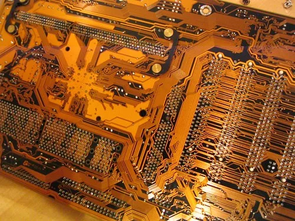
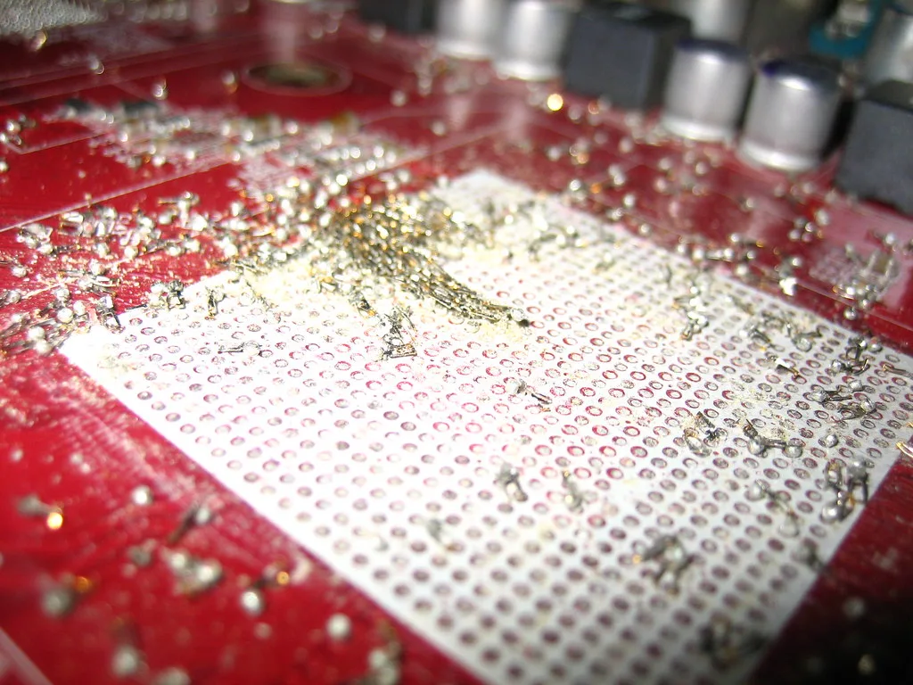

개천절 대체휴일 지나 코스피 7080선…AI 서버 기판株 '쌍끌이' 강세
개천절 대체공휴일로 국내 증시가 쉬었던 지난 5일에 이어, 거래가 재개된 6일 코스피가 상승 마감했다. 올해 개천절은 10월 3일 토요일과 겹치면서 다음 비공휴일인 5일 월요일이 대체공휴일로 지정돼 은행과 증시가 일제히 휴장했다. 이날 코스피는 전 거래일보다 63.01포인트(0.90%) 오른 7080.92로 장을 마쳤고, 코스닥 역시 10.10포인트(1.21%) 오른 844.48에 거래를 마쳤다. 코스피는 개장 전 7044.67로 전날보다 0.58% 높은 수준에서 출발했으며, 장중 한때 6990선까지 밀리는 등 약세를 보이기도 했지만 장 후반 반등에 성공하며 상승 마감했다.
이날 증시의 주된 흐름을 이끈 것은 반도체 기판(PCB) 관련주였다. 인공지능(AI) 데이터센터 투자 확대와 고성능 반도체 패키징용 기판 수요 급증이 맞물리면서 관련 종목들이 장중 일제히 강세를 보였다. 특히 AI 서버에 들어가는 차세대 기판의 공급 부족 현상이 현실화하고 있다는 분석이 투자심리를 자극하며 장 초반부터 매수세가 몰렸다. 통상 반도체 업황을 이야기할 때는 메모리와 파운드리 등 칩 자체에 관심이 집중되지만, 이번에는 그 전후방에 위치한 기판·패키징 공정 관련주로까지 투자 열기가 번진 것이 특징이다.
네오티스는 10.14% 오른 1만8900원에 거래되며 가장 눈에 띄는 상승세를 기록했다. 초소형 드릴(마이크로 드릴) 전문 기업인 네오티스는 AI 반도체 기판의 고다층화·고밀도화에 필수적인 초미세 가공 장비를 생산하는데, 최근 매출액 증가율이 144.76%에 달하는 등 실적 모멘텀이 주가를 뒷받침했다는 평가가 나온다. AI 반도체 기판은 층수가 많아질수록 미세한 구멍을 뚫는 드릴링 공정의 정밀도가 더욱 중요해지는데, 이 분야에서 기술력을 갖춘 업체가 많지 않다는 점이 네오티스에 대한 기대감을 키우고 있다는 분석이다.

초고다층 MLB 기판을 주력으로 하는 이수페타시스도 9.65% 오른 13만2900원에 거래를 마쳤다. 글로벌 빅테크들의 AI 서버 증설이 이어지는 가운데 고다층 기판 공급망에서 독주 체제를 구축하고 있다는 점이 투자자들의 관심을 끈 것으로 풀이된다. 두 종목의 동반 강세는 메모리 반도체 업황 개선이 삼성전자·SK하이닉스 등 대형주를 넘어 후방 부품·기판 업종까지 수혜를 확산시키고 있음을 보여주는 사례로 꼽힌다.
시장에서는 하루짜리 대체공휴일을 보낸 뒤에도 증시가 큰 흔들림 없이 상승세로 복귀한 점에도 주목하고 있다. 지난주까지 이어진 반도체 랠리의 상승 흐름이 짧은 휴장을 거치고도 그대로 이어졌다는 평가다. 다만 장중 한때 지수가 밀리는 등 변동성을 보인 만큼, 단기간에 가격이 많이 오른 종목들을 중심으로 경계심도 함께 제기된다.

증권가는 AI 서버용 기판 공급 부족이 단기 이슈에 그치지 않고 중장기적인 업황 테마로 자리잡을 가능성에 주목하고 있다. 글로벌 빅테크들의 대규모 데이터센터 투자 계획이 내년까지 줄줄이 이어질 예정인 만큼, 기판·패키징 관련 설비와 소재 업체들의 수주 증가세도 함께 주목받고 있다는 설명이다. 다만 일부 종목의 단기 급등에 따른 과열 우려도 함께 거론되는 만큼, 실적 발표 시즌을 앞두고 개별 기업의 수주 현황과 증설 계획 등을 확인하며 선별적으로 접근해야 한다는 조언이 뒤따른다.